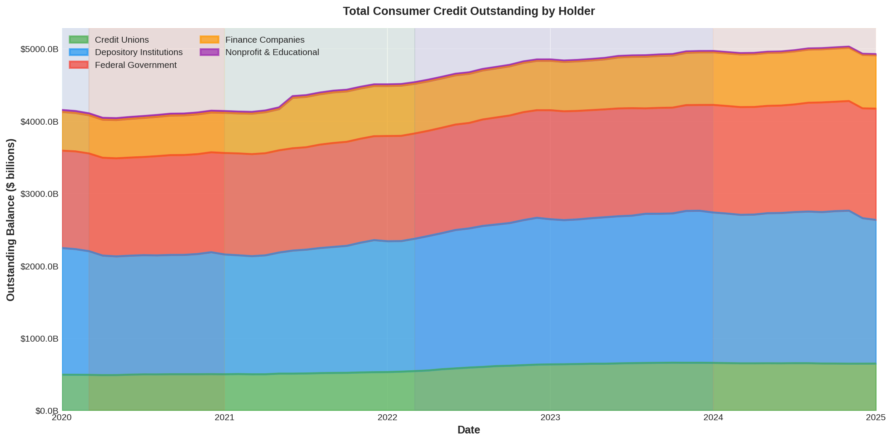
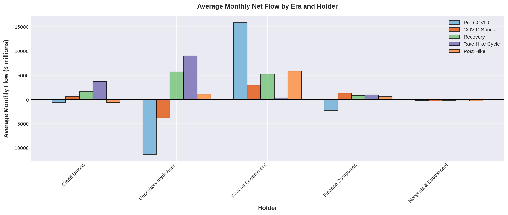
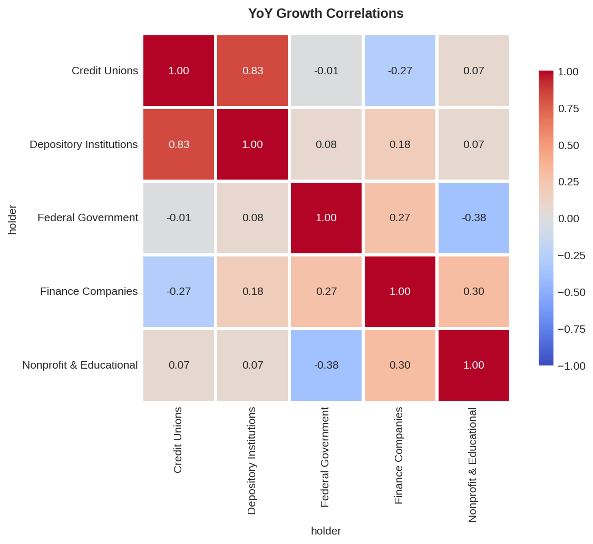
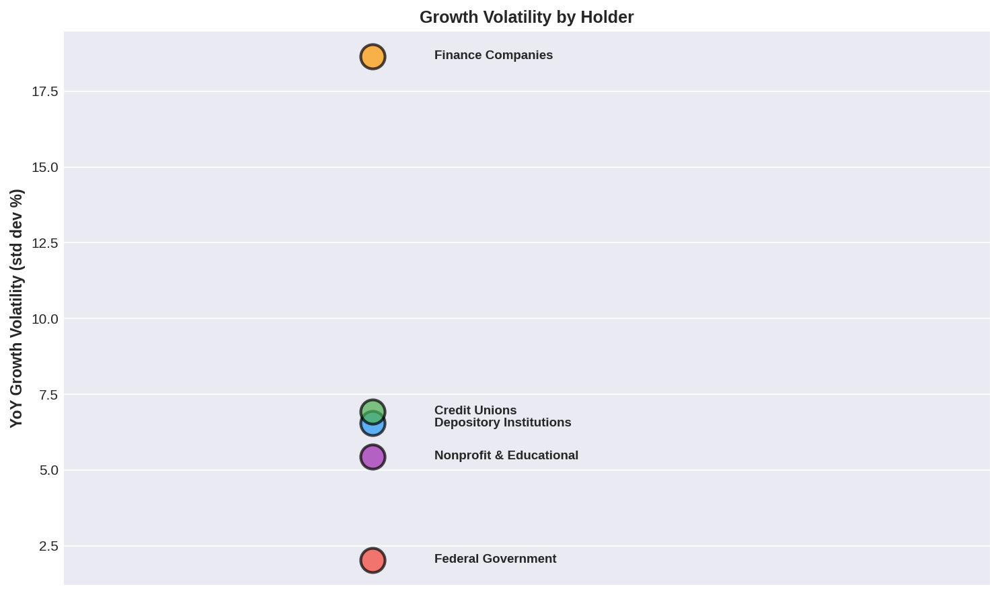
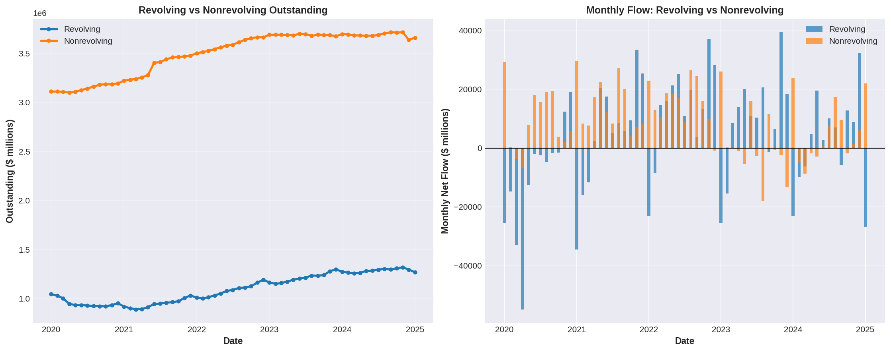
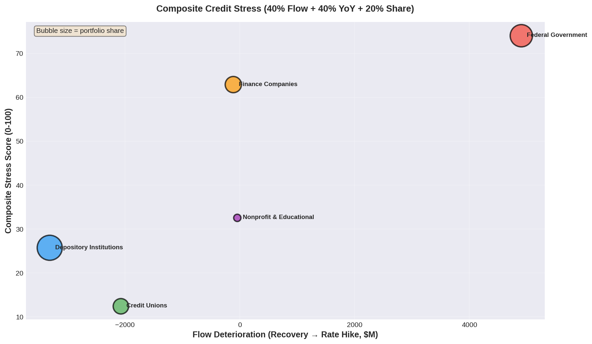

Between January 2020 and January 2025, U.S. consumer credit expanded from $4.16 trillion to $4.93 trillion — absorbing a pandemic shock, the most aggressive Federal Reserve rate hike cycle in four decades, and a cautious post-hike plateau. On the surface, the consumer balance sheet looks resilient.
But aggregate stability masks significant divergence. Federal Government student loan flows collapsed by $4,899M per month during the Rate Hike Cycle. Revolving credit share hit a post-pandemic high of 26.3% — a pattern that historically precedes charge-off peaks by 6–12 months. And three holder segments now show composite stress scores above 45 on a 0–100 scale.
The U.S. consumer credit market reached approximately $4.93 trillion in January 2025, up $772 billion from January 2020. This growth survived the deepest quarterly GDP contraction since 1947 (Q2 2020), a 525 basis-point Federal Reserve tightening cycle, and the restart of student loan repayments after a three-year pause.
But the growth was not evenly distributed. Finance Companies expanded fastest at +37.9%, driven by the used-vehicle lending boom of 2021–2022. Credit Unions grew 30.9%, outpacing their larger competitors. Nonprofit & Educational institutions contracted 43.2% as FFELP loan consolidations accelerated.

The top-line number is reassuring — $4.93 trillion in orderly growth. But the rate at which new credit flows through each holder tells a very different story.
Net flow — monthly net change in outstanding credit — is the closest proxy for delinquency stress in the G.19 dataset. When flows turn persistently negative, it signals that charge-offs and repayments are outpacing new originations. The Federal Government experienced the most dramatic flow collapse: average monthly flow dropped from +$5,249M during Recovery to just +$351M during the Rate Hike Cycle, a deterioration of $4,899M per month.
This reflects the mechanical restart of student loan repayments after the pandemic forbearance pause. Billions per month in repayment cash flows suddenly re-entered the system, compressing net outstanding. Note that Federal Government flows partially recovered in the Post-Hike era as disbursement activity resumed — the stress was concentrated specifically in 2022–2023.

The student loan repayment restart compressed Federal Government flows by nearly $5 billion per month. No other holder type experienced anything close to this magnitude of deterioration.
The correlation matrix reveals a striking split in the consumer credit market. Depository Institutions and Credit Unions show a strong positive correlation (r = 0.81) in their year-over-year growth rates — they expanded together during Recovery and decelerated together during the Rate Hike Cycle. Both are sensitive to consumer confidence, employment conditions, and the Fed funds rate.
The Federal Government, by contrast, is driven almost entirely by policy mechanics — the student loan repayment pause and restart. Its growth rate is weakly correlated with every other holder type (r = 0.06 to 0.25), making it the structural outlier in the market. Finance Companies show moderate negative correlation with Credit Unions (r = –0.32), suggesting they serve different segments of the consumer lending market.


Banks and credit unions dance to the same macro rhythm. The Federal Government moves to a policy drummer that is entirely disconnected from market credit conditions.
Consumer credit is not one product. Revolving credit (primarily credit cards) is open-ended, reprices quickly as rates change, and serves as the consumer's buffer of last resort. Nonrevolving credit (auto loans and student loans) is fixed-term, rate-insensitive once originated, and reflects durable-goods purchase cycles. Their divergent behavior across the five eras reveals how consumers used credit as a tool during each phase — and where the cracks are forming now.
During the COVID Shock, revolving credit plummeted as consumers paid down card balances with stimulus checks, pushing revolving share to a historic low of 21.6% (April 2021). As the Recovery took hold, nonrevolving led the rebound via surging auto demand. Then the Rate Hike Cycle triggered a sharp reversal: nonrevolving decelerated as higher rates cooled auto demand, but revolving accelerated — consumers squeezed by inflation turned to credit cards as a bridge. By December 2024, revolving share had climbed to 26.3%.

When consumers turn to credit cards as a bridge, the clock starts ticking. The 6–12 month lag between revolving acceleration and charge-off peaks is one of the most reliable leading indicators in consumer credit.
The composite stress score synthesizes three normalized metrics: flow deterioration (how much average monthly flow declined from Recovery to Post-Hike, weighted 40%), YoY growth deceleration (peak growth rate minus current, weighted 40%), and portfolio share (systemic risk amplifier, weighted 20%). All metrics are normalized to a 0–100 scale before weighting.
Depository Institutions dominate the ranking — not because any single metric is the worst in isolation, but because the combination of the largest portfolio share (40.3%) with significant flow deterioration (–$6,791M/mo vs. Recovery) and meaningful growth deceleration (17.5 percentage points peak-to-current) produces the highest composite risk.

The model intentionally understates Federal Government risk (student loans peaked during the Rate Hike Cycle, not Post-Hike). A qualitative overlay places student loan repayment cascade risk as the single highest systemic concern.
▶ Data Notes & Methodology (click to expand)